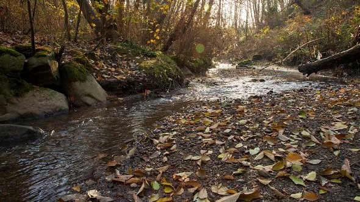

The Problem

Invasive species are species that have been brought by humans from one biome to another that, due to factors such as a lack of natural predators, different growth cycles, or different nutrient requirements, are able to outcompete the native species and have the potential to decrease the biodiversity of the new biome.
Invasive plant species are often brought to a new area in one of two ways. With some plants with particularly hardy seeds, they could be brought by boat, stuck to sailor’s shoes and brought by complete accident, but much more common would be people planting such plants in their gardens without knowing that they have the potential to damage the environment. While some species, such as the the Himalayan blackberry, may have been planted as a food source the majority of invasive species are decorative, which is why care should be taken when planting one's garden to ensure that plants and seed mixes are safe.
In the greater Vancouver area, specifically the still creek area, invasive species such as the Himalayan blackberry and Japanese knotweed tend to choke the stream banks and natural areas. These plant’s ability to outcompete native plants can cause many issues with the natural biodiversity of the region, especially when combined with deforestation.
While Giant Hogweed and Knotweed are the invasive species that pose the most imminent danger to humans and people’s property there are many other other invasive plants that threaten our ecosystem. Himalayan blackberry, which grows along the banks of most streams in the local area, and plants like english ivy can choke out native plants. While the solutions we list are tailored to the plants listed above, similar techniques to those discussed in this website will be effective for other plants.